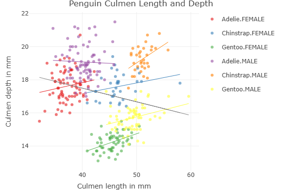

I just wondering how to recreate the image in the note on page 25. So I go to study how to get a similar plot.
I downloaded a dataset from Kaggle about penguin which is well-known for illustrating Simpson's Paradox.The output looks nice. You can view this plot on the HTML page here.

library(plotly)
library(dplyr)
df <- read.csv("penguins_size.csv")
df = na.omit(df)
df <- df[!(df$sex == "."), ]
# I see one entry is ".", so I remove it manually (I think there is a better way to do that)
# Edit data
df_plot <- df %>%
rename(depth = culmen_depth_mm, length = culmen_length_mm) %>%
# Add a new column for the pair (species, sex)
mutate(ss = interaction(species,sex)) %>%
# Find regression lines according to each type in (species, sex)
group_by(ss) %>%
arrange(length) %>%
mutate(depth_fitted = fitted(lm(depth ~ length))) %>%
ungroup() %>%
# Find the regression line without specifying (species, sex) to illustrate Simpson's Paradox
mutate(depth_fitted_overall=fitted(lm(depth ~ length)))
# Plot
scatter_plot <- plot_ly(df_plot, color = ~ss, colors = "Set1") %>%
add_markers(x = ~length, y = ~depth,type = "scatter", mode = "markers",
legendgroup = ~ss,
name = ~ss, # For legend
alpha = 0.6, # Make the color faint
) %>%
add_lines(
x = ~length, y = ~depth_fitted,
line = list(width = 1),
legendgroup = ~ss, showlegend = FALSE
) %>%
add_lines(
x = ~length, y = ~depth_fitted_overall,
line = list(width = 1, color="gray"),
showlegend = FALSE
) %>%
layout(
title = "Penguin Culmen Length and Depth",
xaxis = list(title = "Culmen length in mm"),
yaxis = list(title = "Culmen depth in mm")
)
scatter_plot